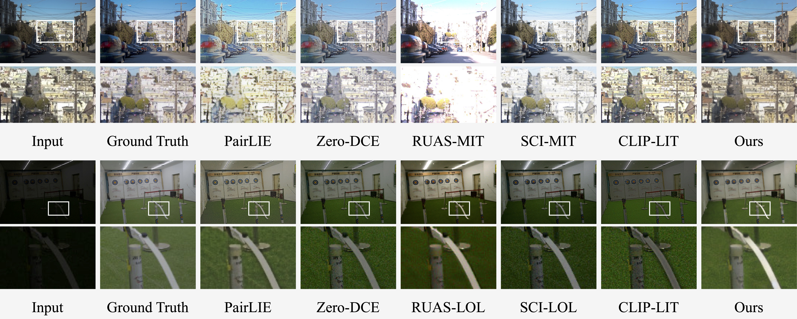

Understanding illumination and reducing the need for supervision pose a significant challenge in low-light enhancement. Current approaches are highly sensitive to data usage during training and illumination-specific hyper-parameters, limiting their ability to handle unseen scenarios. In this paper, we propose a new zero-reference low-light enhancement framework trainable solely with normal light images. To accomplish this, we devise an illumination-invariant prior inspired by the theory of physical light transfer. This prior serves as the bridge between normal and low-light images. Then, we develop a prior-to-image framework trained without low-light data. During testing, this framework is able to restore our illumination-invariant prior back to images, automatically achieving low-light enhancement. Within this framework, we leverage a pretrained generative diffusion model for model ability, introduce a bypass decoder to handle detail distortion, as well as offer a lightweight version for practicality. Extensive experiments demonstrate our framework's superiority in various scenarios as well as good interpretability, robustness, and efficiency.
The overall methodology of our approach is shown on the right.
Our model is trained to reconstruct images from an illumination-invariant prior (the physical quadruple prior) in the normal light domain.
During testing, the model extracts illumination-invariant priors from low-light images and reconstructs them into normal light images.
Highlights:
Framework: Our illumination-invariant prior and the training process for our prior-to-image model framework. We start by predicting the physical quadruple prior from the input image I. During the training phase, the model dynamically learns the linear mapping W and the layers for predicting the scale σ. In the process of reconstructing priors into images, a static SD encoder extracts the latent representation z0 from the input image I. Following this, we sample noisy latent zt based on z0. Finally, the physical quadruple prior is encoded by convolutional and transformer modules, and is then merged with a frozen SD U-net to predict both noise ϵ and z0.
Our model surpasses the majority of unsupervised techniques and notably reduces the performance gap compared to supervised methods.
Example low-light enhancement results on the MIT-Adobe FiveK (top row) and LOL datasets (bottom row). Our model is able to more effectively suppress noise and prevent overexposure or excessive darkness.
@misc{quadprior,
title={Zero-Reference Low-Light Enhancement via Physical Quadruple Priors},
author={Wenjing Wang and Huan Yang and Jianlong Fu and Jiaying Liu},
booktitle={IEEE conference on computer vision and pattern recognition (CVPR)}
year={2024},
}If you have any questions, please contact Wenjing Wang (daooshee@pku.edu.cn).